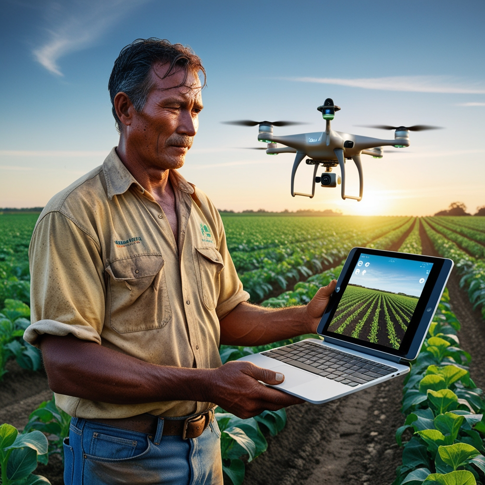
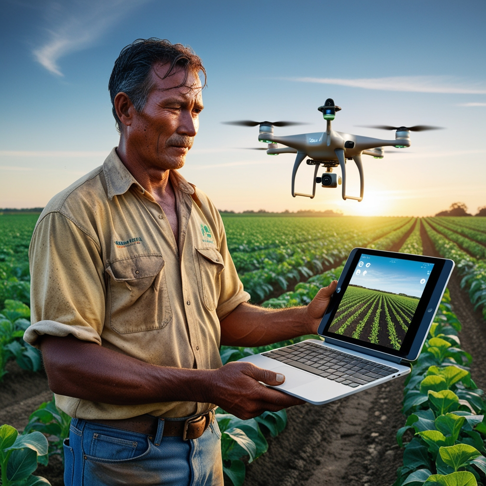

DO CAMPO A CIDADE
.jpg) 

A transição do campo para a cidade é mais do que uma mudança de endereço; é uma jornada em busca de novas oportunidades e desafios. No campo, a vida é marcada pela simplicidade e pela conexão direta com a terra. O trabalho é árduo e as recompensas vêm do cultivo paciente e da colheita sazonal. No entanto, ao chegar à cidade, o cenário muda drasticamente. A dinâmica urbana oferece uma gama diversa de possibilidades que muitas vezes não estão disponíveis nas áreas rurais. Aqui, as oportunidades se apresentam na forma de empregos variados, educação e inovação tecnológica.
O campo e a cidade podem parecer mundos diferentes, mas a experiência rural traz uma perspectiva valiosa. A habilidade de enfrentar adversidades, a criatividade na resolução de problemas e a ética de trabalho rigorosa são qualidades que enriquecem o ambiente urbano. Na cidade, essas habilidades são transformadas em novos horizontes, com acesso a recursos e redes que podem amplificar as oportunidades.
Assim, ao fazer a transição do campo para a cidade, há um rico potencial para crescer e se desenvolver. Aproveitar as oportunidades urbanas com a mesma dedicação que se teve no campo pode resultar em uma jornada de sucesso e realização. Em cada esquina da cidade, há novas possibilidades esperando para serem descobertas por aqueles que têm a coragem e a visão para explorá-las.